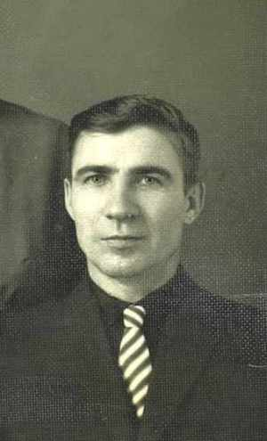
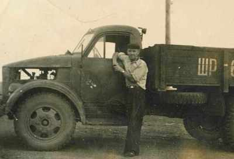
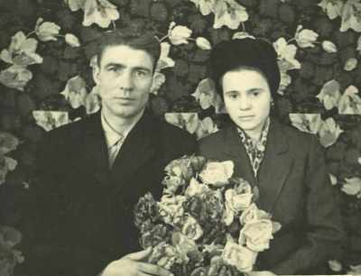
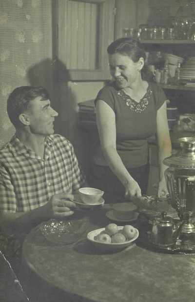

Кравчук Владимир ПавловичРодился 22.06.1929 в д.Миньковцы, Андрушовского р-на, Житомирской обл., Украина. после службы в армии приехал осваивать целину в Павлодарскую обл. (Казахстан), в совхоз "Советский Казахстан", работал шофером, в 1955 они с Лысенко Надеждой Васильевной поженились в д.Антошинка (Новокузьминка), Железинского р-на, Павлодарской обл. в Казахстане, в 1976г. переехали в Гродно (Беларусь). |

 на работе 1957г.  с супругой Надеждой Васильевной, д.Антошинка 1957г.  г.Алма-Ата 1966г. |
|
Родители:
Братья/Сестры:
Дети:
|